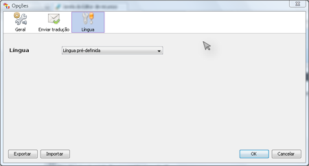
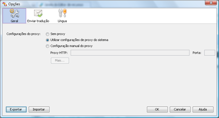

A configuração do Trancestris é muito fácil.
Pode aceder-lhe através do menu Ferramentas -> Opções.
São-lhe oferecidos três separadores à escolha Geral – Enviar
tradução – Idioma.
A primeira vez que iniciou o Trancestris, configurou a maioria daquilo que é
necessário, uma vez que teve de preencher os dados para que o seu computador
pudesse enviar as suas traduções, uma vez completadas.
Se precisar de alterar estas definições, verifique os
parâmetros no separador Enviar
tradução.
Outra definição é o idioma que o Trancestris vai
usar no ambiente de utilizador. Cuidado, este não é o
idioma para que vai traduzir, é só o idioma de utilização
do Trancestris.

Os últimos parâmetros estão reunidos no primeiro separador,
“Geral”. Utiliza um proxy para ligação à internet?
Faça aqui as suas definições.

|
|
|